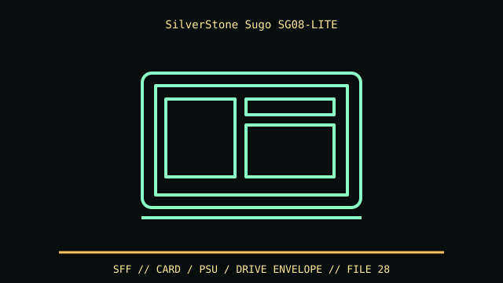

[ IDENTIFIED ENCLOSURE // SUGO SG08-LITE BARE CHASSIS (NOT PSU-EQUIPPED SG08) ]
SilverStone Sugo SG08-LITE
222 × 190 × 351 mm (W × H × D); GPU up to 309 mm. Internal layout is constrained by the included front fan bracket and optional optical drive.

VARIANT / ARCHIVAL CAVEAT: SG08-LITE is not original SG08 with bundled PSU and differs from SG09. Confirm exact model and included slim-drive bezel, filter and PSU bracket.
Mechanical specifications and fit
| Catalog identity | Sugo SG08-LITE bare chassis (not PSU-equipped SG08) |
|---|---|
| Dimensions and clearances | 222 × 190 × 351 mm (W × H × D); GPU up to 309 mm. Internal layout is constrained by the included front fan bracket and optional optical drive. |
| Drive bays / mounts | One slim slot-loading optical position, one internal 3.5-inch and two 2.5-inch positions in the manual layout. |
| Board, system and compatibility | Mini-ITX/Mini-DTX, 2 slots; SG08-LITE supports ATX PSU up to listed 160 mm depth or SFX via bracket; verify GPU/PSU cable overlap. |
| Revision / identification | SG08-LITE is not original SG08 with bundled PSU and differs from SG09. Confirm exact model and included slim-drive bezel, filter and PSU bracket. |
Preservation and installation notes
SG08-LITE is not original SG08 with bundled PSU and differs from SG09. Confirm exact model and included slim-drive bezel, filter and PSU bracket.
Mini-ITX/Mini-DTX, 2 slots; SG08-LITE supports ATX PSU up to listed 160 mm depth or SFX via bracket; verify GPU/PSU cable overlap.
- Capture the complete model/SKU, serial/date label, board assembly and bay/backplane/riser identifiers before disassembly; keep matched screws, trays, carriers, feet and cables with the case.
- Check the cited manual's specific build option before transferring hardware. Published maximum GPU, drive, fan or radiator capacity may not be simultaneous when a removable cage or alternative riser occupies that volume.
- For rack and vintage systems, preserve the exact rails, shields, doors, brackets and model-specific safety instructions; do not infer compatibility from a familiar brand or physical connector shape.
Manufacturer manuals and archival sources
- SilverStone SG08-LITE installation manualPrimary manufacturer or model-specific technical/manual reference used for the identification and mechanical data above.
- SilverStone SG08-LITE official product pageSecond product manual, manufacturer resource or established technical archive; choose the exact regional SKU and revision.
When exact dimensions depend on configuration, the text says so; verify the measured specimen before making a fit or restoration decision.